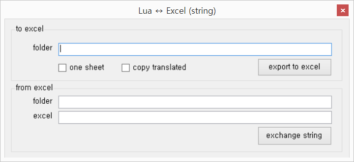

String Exchanger (LUA)
String Exchanger는 지속적인 관리가 필요하지 않은 번역 파일을 대상으로 문자열을 Excel 파일로 추출 및 복원해주는 도구입니다. 원본 파일에 존재하는 문자열에 ID를 직접 발급하고, 이를 토대로 Excel 파일을 만들어주거나 작업이 완료된 Excel 파일의 문자열 내역을 원본 파일에 덮어써줍니다. 이는 다음의 기능을 지원합니다.
- Lua 파일에서 문자열 혹은 주석을 발급한 ID로 치환하고, 수집한 문자열을 Excel 파일로 만들어줍니다.
- 번역이 완료된 Excel 파일과 ID로 치환된 Lua 파일을 합쳐서 번역이 완료된 Lua 파일을 만들어줍니다.
번역이 필요한 Lua 파일은 코드와 문자열이 섞여있기 때문에 번역자의 번역 작업이 매우 번거로워집니다. 이 툴을 사용하여 코드와 문자열을 분리하면 번역자는 Excel로만 작업을 진행할 수 있으므로 번역 작업 효율 향상에 도움이 됩니다.
툴은 다음의 위치에서 다운로드 받을 수 있습니다.
-
string-xchg.zip
- 위 압축 파일은 다음의 3개의 파일로 구성되어 있습니다:
- LuaStringXchg.exe
- DocumentFormat.OpenXml.dll
- ClosedXML.dll
- 만약 프로그램이 제대로 실행되지 않는다면 Microsoft .NET Framework 4 Client Profile을 설치해주시기 바랍니다.
본 프로젝트의 소스코드는 이 위치에서 확인하실 수 있습니다.
사용 방법

- 이 링크에서 파일을 내려 받은 후, 적절한 위치에 압축을 풀어 실행합니다.
-
to excel은 lua 파일에서 문자열을 추출해 excel 파일을 만드는 기능입니다.
- folder에 lua 파일이 들어있는 폴더 끌어서 놓거나(drag&drop) 직접 입력하신 후 export to excel 버튼을 누르시면
폴더이름_out에 id가 적용된 lua 파일과 문자열이 들어있는 excel 파일을 얻을 수 있습니다.- 예를 들어, config 라는 폴더에 원본 lua 파일들이 들어있었다면 config_out 폴더에 id가 적용된 lua 파일과 문자열 excel 파일이 생성됩니다.
- 문자열 excel 파일의 C column 부분에 번역된 문자열을 넣어주시면 됩니다.
-
one sheet를 선택하면 하나의 sheet에 다 모아주고,copy translated를 선택하면 C column에도 번역할 문자열을 넣어줍니다.
- folder에 lua 파일이 들어있는 폴더 끌어서 놓거나(drag&drop) 직접 입력하신 후 export to excel 버튼을 누르시면
-
from excel은 to excel로부터 만들어진 out 폴더, 즉 위 예시 기준으로 config_out 폴더의 경로를 입력해주시면 됩니다. (drag&drop하면 excel 경로가 자동으로 입력되므로 drag&drop하시면 편합니다.)
- folder에는 id가 적용된 lua 파일이 들어있어야만 합니다. 원문이 들어있는 lua 파일들의 경로를 입력하시면 안 됩니다.
- excel에는 작업이 완료된 문자열 excel 파일의 경로를 넣습니다.
- exchange string을 입력하시면 id 적용된 lua 파일에 번역된 문자열이 삽입되어
폴더이름_out에 결과 파일이 나오게 됩니다.- 예를 들어, folder에 config_out을 입력하면 결과는 config_out_out으로 나오게 됩니다.
추후 개발 내역
- 용어집 추출/적용 기능
- 예전 번역 파일을 참고하여 기계적으로 번역을 적용해주는 기능
버그 신고
프로그램 사용 중 문제가 발생할 경우, 아래의 두 곳 중 아무 곳에나 알려주시면 됩니다.
간단한 문제 상황과 변환 결과 로그를 첨부해주시면 큰 도움이 됩니다.